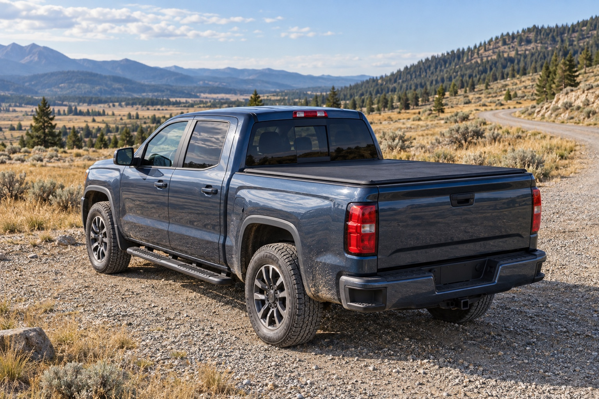

How to Measure Your Truck Bed for a Tonneau Cover
Measure the right bed surfaces, separate nominal size from tape readings, and record the rail and tailgate details a tonneau cover needs.
Read guideThe OEDRO journal
Practical answers for your truck.
From the first measurement to the next repair.

AI-generated editorial imageThe starting point
Measure the right bed surfaces, separate nominal size from tape readings, and record the rail and tailgate details a tonneau cover needs.
Get the measurement right →Measure the right bed surfaces, separate nominal size from tape readings, and record the rail and tailgate details a tonneau cover needs.
Read guideCompare cab-length and extended steps, tread placement, installed height, and mounting kits before choosing running boards.
Read guideCompare soft and hard covers by opening access, tailgate operation, cargo protection, and the work needed to remove them.
Read guideReplace old mats, use the correct retainers, check pedal clearance, and clean liners without creating a slippery or loose driver's mat.
Read guideUse the correct F-150 cab name, bed size, seat type, flooring, and rear-storage details when comparing mats, steps, and bed covers.
Read guideIdentify your Tacoma's bed and deck-rail setup, understand edition exclusions, and preserve the cargo access you need when choosing a cover.
Read guideIdentify Double Cab versus CrewMax, record hybrid and rear-floor details, and check the exact liner coverage before ordering Tundra floor mats.
Read guideSort Silverado and Sierra liners by model series, cab, front-seat layout, and rear storage, with examples of real product-page exclusions.
Read guideIdentify the Ram 1500 body version, bed, RamBox equipment, and tailgate before choosing a tonneau cover and mounting kit.
Read guideCompare aftermarket bumpers by vehicle application, sensors, lighting, towing equipment, recovery limits, and documented installation requirements.
Read guidePrepare an aftermarket bumper installation with the correct manual, hardware inventory, support plan, wiring requirements, and final functional checks.
Read guideDocument where a tonneau cover problem starts, inspect seals and alignment safely, and prepare useful evidence for a replacement-part or support request.
Read guideTry a shorter phrase or choose another topic.